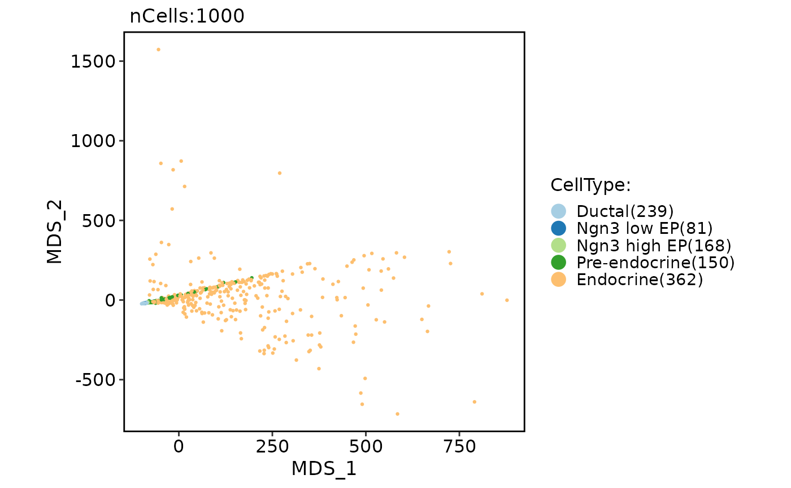

Run MDS (multi-dimensional scaling)
Usage
RunMDS(object, ...)
# S3 method for Seurat
RunMDS(
object,
assay = NULL,
slot = "data",
features = NULL,
nmds = 50,
dist.method = "euclidean",
mds.method = "cmdscale",
rev.mds = FALSE,
reduction.name = "mds",
reduction.key = "MDS_",
verbose = TRUE,
seed.use = 11,
...
)
# S3 method for Assay
RunMDS(
object,
assay = NULL,
slot = "data",
features = NULL,
nmds = 50,
dist.method = "euclidean",
mds.method = "cmdscale",
rev.mds = FALSE,
reduction.key = "MDS_",
verbose = TRUE,
seed.use = 11,
...
)
# S3 method for default
RunMDS(
object,
assay = NULL,
slot = "data",
nmds = 50,
dist.method = "euclidean",
mds.method = "cmdscale",
rev.mds = FALSE,
reduction.key = "MDS_",
verbose = TRUE,
seed.use = 11,
...
)Arguments
- object
An object. This can be a Seurat object, an assay object, or a matrix-like object.
- ...
Additional arguments to be passed to the stats::cmdscale, MASS::isoMDS or MASS::sammon function.
- assay
A character string specifying the assay to be used for the analysis. Default is NULL.
- slot
A character string specifying the slot name to be used for the analysis. Default is "data".
- features
A character vector specifying the features to be used for the analysis. Default is NULL, which uses all variable features.
- nmds
An integer specifying the number of dimensions to be computed. Default is 50.
- dist.method
A character string specifying the distance metric to be used. Currently supported values are "euclidean", "chisquared","kullback", "jeffreys", "jensen", "manhattan", "maximum", "canberra", "minkowski", and "hamming". Default is "euclidean".
- mds.method
A character string specifying the MDS algorithm to be used. Currently supported values are "cmdscale", "isoMDS", and "sammon". Default is "cmdscale".
- rev.mds
A logical value indicating whether to perform reverse MDS (i.e., transpose the input matrix) before running the analysis. Default is FALSE.
- reduction.name
A character string specifying the name of the reduction to be stored in the Seurat object. Default is "mds".
- reduction.key
A character string specifying the prefix for the column names of the basis vectors. Default is "MDS_".
- verbose
A logical value indicating whether to print verbose output. Default is TRUE.
- seed.use
An integer specifying the random seed to be used. Default is 11.
Examples
pancreas_sub <- RunMDS(object = pancreas_sub)
CellDimPlot(pancreas_sub, group.by = "CellType", reduction = "mds")
